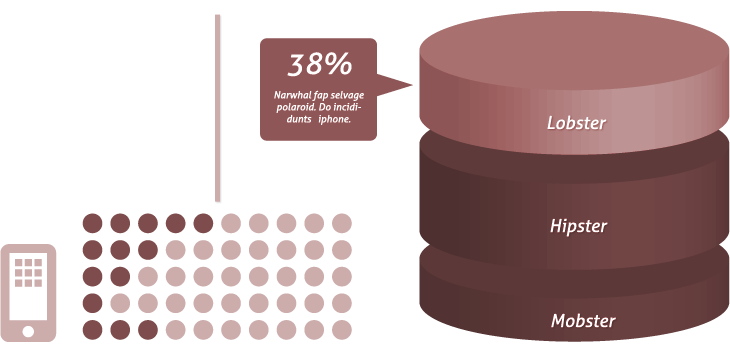
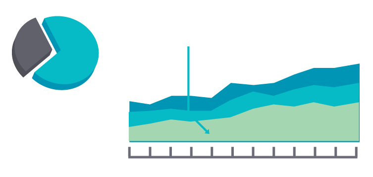

Assignment: CSS Only Slideshow with Parallax Effect


- 
- 

Task
Add transition/animate css properties to implement smooth and parallax scrolling for slideshow widget. Now all slideshow steps are executed immediately. To archive parallax effect plese use different speed for background (world map) and foreground (slides):
- Assign "linear" animation with 0.7s duration for background moving.
- Assign "ease-in" animation with 0.8s duration for foreground moving.
- Assign "ease-in" animation with 0.8s duration and 0.4s delay for opacity when foreground started to move.
The archived result has to be simular to this video: